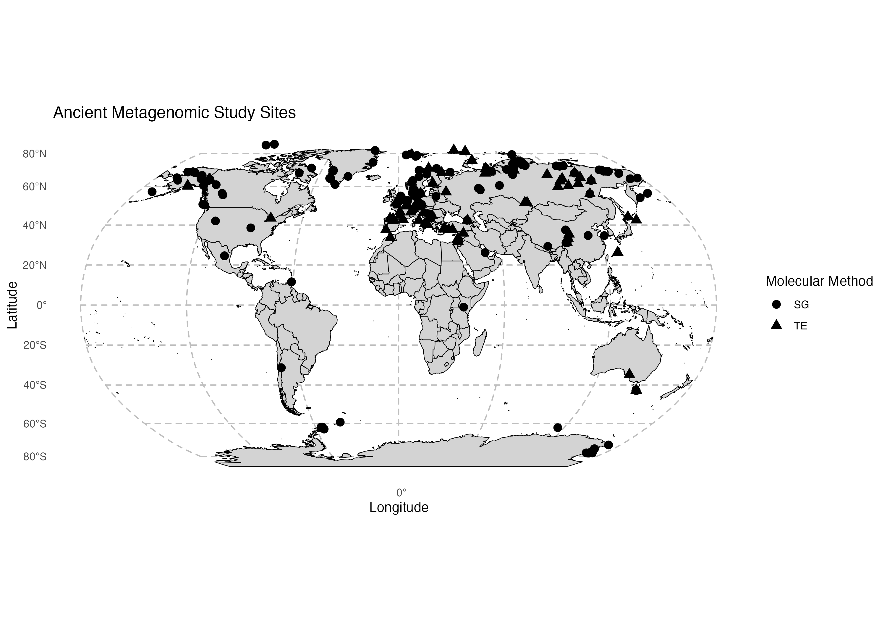
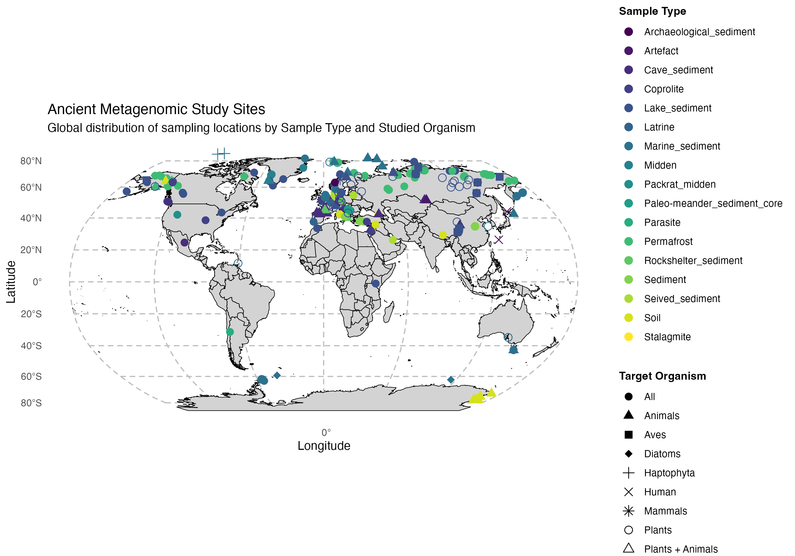

A living literature compilation
Past environments.
Present evidence.
Explore ancient environmental DNA studies across places, periods, and methods. A shared view of the eukaryotic metagenomics literature, from sediment archives to archaeological deposits.
Publication identifiers are distinct DOIs, falling back to citation text when absent. A site record is one source-table row; it is not necessarily a unique locality. How to read these counts
01 / EXPLORE
A geography of ancient DNA
Filter the compilation. The map, charts, and source records update together.
Data source & table options Embedded snapshot
Source: embedded snapshot · 0 site records
The snapshot was preserved from the previous dashboard; its original capture date was not recorded. A live refresh replaces it for this browser session.
A published CSV endpoint can be needed when a browser blocks the standard Google export. Local imports stay in your browser.
02 / THROUGH TIME
The growing evidence base
Distinct publication identifiers within each year and method. Multi-site papers count once per method.
03 / ANALYTICAL METHODS
From sequences to assignments
Reference databases and mappers reported in the selected literature. Each source category is kept as recorded.
04 / SOURCE RECORDS
Follow the evidence
| Publication | Site | Region / country | Method | Sample type | DOI |
|---|
05 / ORIGINAL FIGURES
The familiar views
The existing R-generated figures are retained unchanged. These images do not respond to the filters above.






ABOUT THE COMPILATION
Ancient DNA in context.
Holi brings together studies of eukaryotic ancient environmental DNA analysed with shotgun sequencing or capture enrichment. The compilation excludes studies using only metabarcoding and extends the sedimentary aeDNA inventory to additional environmental and archaeological archives.
Ancient environmental samples may contain DNA from more than one unknown organism, including sediments, coprolites, middens, and stalagmites. Identification and authentication require careful interpretation of preservation, damage, coverage, and context.
Reading the plots
The map uses only coordinates within geographic bounds. Records without usable coordinates remain in the charts and table. A plotted marker represents a table row, so nearby or repeated sites can overlap.
Publication totals use DOI identifiers rather than independently verified papers. Each method or database category can include the same paper, so category totals can exceed the distinct identifier count. Cumulative curves begin at the selected first year.
Proposed DOI corrections remain in the review tab until accepted by the curator. The historic static figures and interactive snapshot can represent different capture dates.
Explore the reference genome catalogue ↗